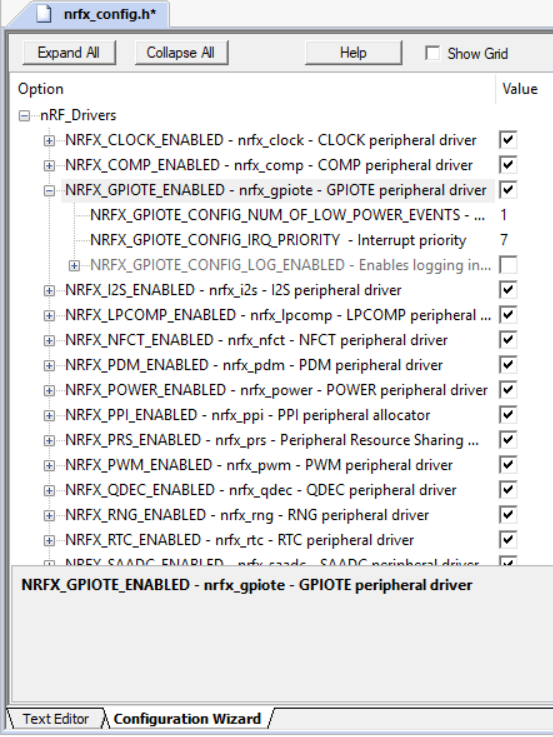
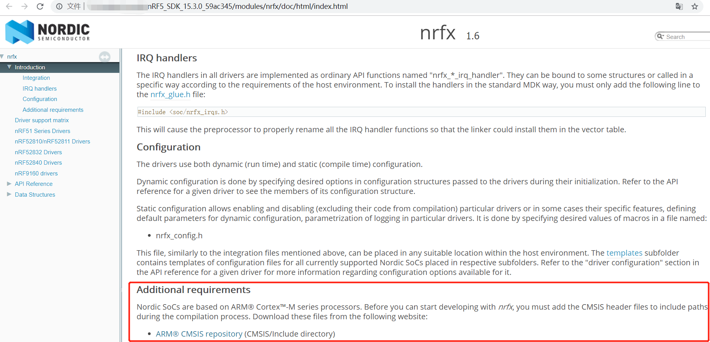
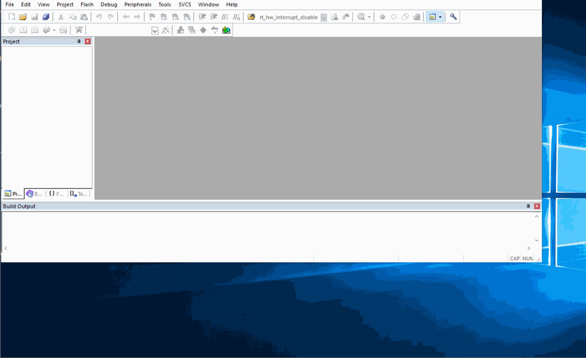
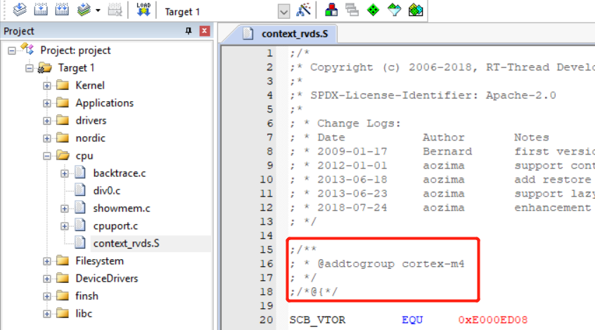
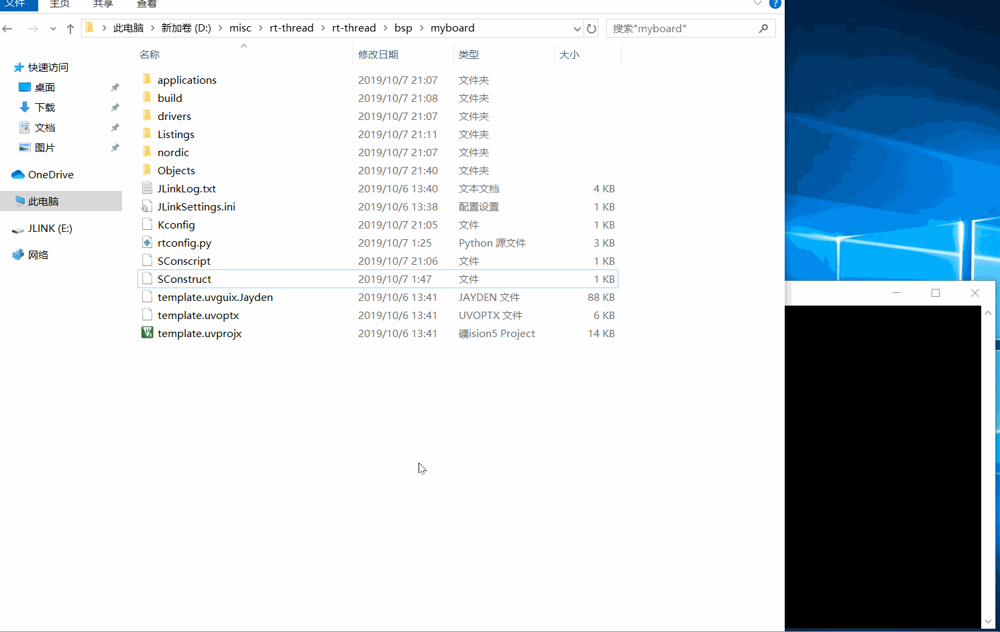

前言
博主不喜欢从零开始造轮子，但是有“不试一下鬼知道做了什么”强迫症，因此钟爱搬运移植文件，用一些土方法来理清软件之间的关系以及换一个平台怎么办的思路。
移植目标：移植rt-thread到开发板上，并通过串口打印hello world。
目录
1. 建立项目框架
1.1. 认识nrfx
文件夹路径：nRF5_SDK_15.3.0_59ac345\modules\nrfx
nrfx由nordic提供的一系列外设驱动组成，无需集成厚重的标准SDK就能把芯片跑起来，是一个轻量级的驱动库。
移植只需要关注以下内容：
- 芯片类型宏定义
- nrfx_config.h
- nrfx_glue.h
- nrfx_log.h
- CMSIS/include
芯片类型宏定义：
在编译阶段必须加入一款芯片类型宏定义，否则编译会报错，后面会在SConscript中加入芯片类型宏定义。
1 | /* Device selection for device includes. */ |
nrfx_config.h:
该文件可以配置nrfx驱动，可以在keil在界面配置，如下图所示。

nrfx_glue.h
该文件由未实现的宏定义组成，未实现宏定义可以看成钩子函数，nrfx驱动代码会调用这些钩子函数，如果需要用到该钩子函数，则实现，若不需要则留空。
如需要用到临界区，防止嵌套中断发生，nrfx_glue.h文件如下：
1 | /** |
如不需要用到临界区，不考虑嵌套中断发生的情况，nrfx_glue.h文件如下：
1 | /** |
nrfx_log.h
同上
CMSIS/include
根据nrfx根目录README提示，可用doxygen生成文档，生成的文档中有下图红框要求。直接下载该文件夹即可，不需要修改。

1.2. rt-thread构建环境
了解nrfx后，接下来就要将其与rt-thread的构建环境关联起来。
1.2.1. 创建bsp文件夹
在bsp目录下创建文件夹myboard，即rt-thread\bsp\myboard。
1.2.2. 添加bsp的模板工程
rt-thread官方NOTE：要生成 MDK 或者 IAR 的工程文件，前提条件是 BSP 目录存在一个工程模版文件，然后 scons 才会根据这份模版文件加入相关的源码，头文件搜索路径，编译参数，链接参数等。而至于这个工程是针对哪颗芯片的，则直接由这份工程模版文件指定。所以大多数情况下，这个模版文件是一份空的工程文件，用于辅助 SCons 生成 project.uvprojx 或者 project.eww。
在调用scons --target=mdk5前，需在rt-thread\bsp\myboard先提供一个mdk模板工程：
下面简单演示模板工程创建过程。

1.2.3. 添加bsp的Kconfig
将rt-thread\bsp\stm32f10x\Kconfig搬运到myboard目录下，删除Kconfig文件中不需要部分。
1 | config SOC_STM32F1 |
若在myboard目录下执行menuconfig，则menuconfig会根据rt-thread\bsp\myboard\Kconfig中的语句生成rt-thread\bsp\myboard\rtconfig.h，该头文件包含各种宏定义。
rt-thread\bsp\myboard\Kconfig文件可通过source语句引用其他目录下的Kconfig文件，协助其生成所需的宏定义，如以下例子：
- Kconfig文件的目录路径：
1 | rt-thread |
rt-thread\bsp\myboard\Kconfig引用rt-thread\Kconfig语句：
1 | config RTT_DIR |
rt-thread\Kconfig引用rt-thread\src\Kconfig语句：
1 | source "$RTT_DIR/src/Kconfig" |
rt-thread\src\Kconfig协助生成宏定义内容：
1 | config RT_TICK_PER_SECOND |
- 在myboard目录下执行menuconfig配置后，会在
rt-thread\bsp\myboard\rtconfig.h生成如下宏定义：
1 |
- 最后其他
.c文件可引用该头文件，并使用RT_TICK_PER_SECOND宏定义。实现在rt-thread\bsp\myboard用menuconfig就可以配置整个工程的静态设置，如：
1 |
|
1.2.4. 添加bsp的rtconfig.py
将rt-thread\bsp\nrf52832\rtconfig.py搬运到myboard目录下。
当调用sconsc --target=mdk5生成mdk工程时候，脚本会根据rt-thread\bsp\myboard\rtconfig.py文件中的变量CPU='cortex-m4'选择对应的文件添加进工程，如下图针对性添加了m4内核的上下文切换文件。

1.2.5. 添加bsp的SConscript/SConstruct
将rt-thread\bsp\nrf52832\SConscript和rt-thread\bsp\nrf52832\SConstruct搬运到myboard目录下。
删除SConscript文件中不需要部分。
1 | objs = objs + SConscript(os.path.join(cwd, 'nRF5_SDK_13.0.0_04a0bfd/components/SConscript')) |
1.2.6. 添加nrfx
参考官方的做法创建一个nordic文件夹，并在myboard\nordic目录下添加以下内容：
CMSIS/include文件夹nrfx文件夹- SConscript文件
1.2.7. 添加设备驱动实现
参考官方的做法创建一个drivers文件夹，并在myboard\drivers目录下添加以下内容：
- board.c和board.h
- drv_gpio.c和drv_gpio.h
- drv_uart.c和drv_uart.h
- SConscript文件
1.2.8. 添加应用层代码
参考官方的做法创建一个applications文件夹，并在myboard\applications目录下添加以下内容：
- application.c
- SConscript文件
其中application.c文件的main函数中包含打印hello world的代码，至于是如何从上电运行到main函数的，可参考启动流程。
1.3. 验证环境构建结果
至此，最简洁的功能移植已经完成，后面验证是否移植成功，若成功串口助手将打印hello world。
进入rt-thread\bsp\myboard路径下，右键打开env。
- 用usb线将板子与PC连接
- 验证menuconfig功能，同时配置console名字
- 验证scons –target=mdk5
- 编译，烧录，观察串口打印信息

NOTE：rt_kprintf依赖rt_console_set_device函数
1、若用rt_kprintf函数打印信息，则需要一个标记为console设备的通信接口设备。
2、rt_console_set_device(console_name)函数从众多已注册通信接口设备中找到与参数console_name相同名字的设备，并将该设备标记为console设备。
3、rt_hw_serial_register(uart0)函数注册一个名字为uart0的通信接口设备。
所以生成mdk工程前，需要用menuconfig配置console_name为uart0，否则rt_kprintf就会由于找不到通信接口设备，导致无法打印信息。